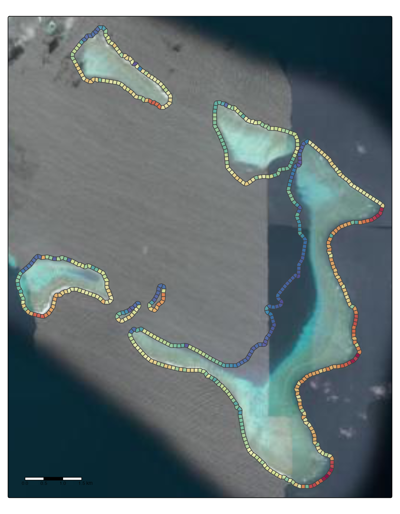
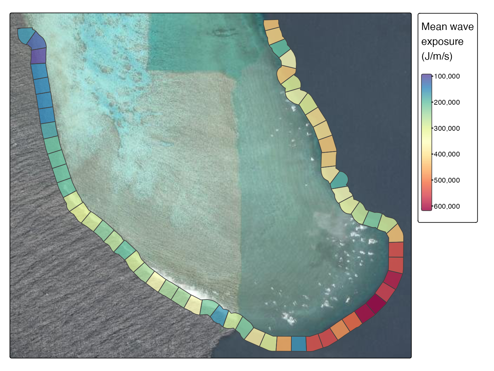

Example workflow from the far Northern GBR
library(coastalwaves)
library(dhw)
library(sf)
library(tidyverse)
library(lubridate)
library(ggplot2)
### download GBR shape file
gbr_shape <- download_gbr_spatial(return = "base") |>
select(LOC_NAME_S, X_COORD, Y_COORD) |>
st_make_valid() |>
st_transform(20353)
### Grep subset for target reefs, create union
fn_ribbons <- gbr_shape |>
filter(grepl("12-032|12-037|12-038|12-032|12-031", LOC_NAME_S))
fn_ribbons_union <- fn_ribbons |>
st_union() |>
st_boundary() |>
st_cast("LINESTRING")
# Extract broader region
fn_ribbons_region <- st_crop(gbr_shape,
fn_ribbons_union |>
st_union() |>
st_centroid() |>
st_buffer(20000))
# get points
fn_ribbons_points <- calculate_points(fn_ribbons_union, 100)
### calculate fetch
fn_ribbons_fetch <- calculate_fetch(point = fn_ribbons_points,
degrees = 7.5,
fetch = 5000,
land = fn_ribbons_region,
parallel = TRUE,
cores = 8)
### get wind data
#fn_ribbons_wind <- get_wind_data(st_centroid(st_union(fn_ribbons)), "1989-09-01", "1989-09-10")
fn_ribbons_wind <- read.csv("/Users/rof011/coastalwaves/data/df_ngbr.csv") |>
rename(windspeed_ms = wspeed, date=time)
### get waves
fn_ribbons_waves <- calculate_wave_exposure(wind = fn_ribbons_wind,
fetch = fn_ribbons_fetch,
points = fn_ribbons_points,
parallel = TRUE,
cores = 8)
fn_ribbons_wave_grid <- create_wave_grid(fn_ribbons_union, fn_ribbons_waves, interval = 100, width = 100)
library(tmap)
tmap_mode("plot") +
tm_basemap("Esri.WorldImagery") +
tm_shape(fn_ribbons_wave_grid) +
tm_polygons(fill="wave_energy_mean", shape=21, size=0.8, fill_alpha=0.8,
fill.scale=tm_scale_continuous(values="-brewer.spectral"),
fill.legend=tm_legend_hide(),
label.format = tm_label_format(scientific = TRUE)) +
tm_scalebar(position = c("left", "bottom"))
insetbbox <- st_bbox(c(xmin=1472028, xmax=8645891, ymin=1476703, ymax=8648071))
tmap_mode("plot") +
tm_basemap("Esri.WorldImagery") +
tm_shape(fn_ribbons_wave_grid |> st_crop(insetbbox)) +
tm_polygons(fill="wave_energy_mean", shape=21, size=0.8, fill_alpha=0.8,
fill.scale=tm_scale_continuous(values="-brewer.spectral"),
fill.legend = tm_legend(title="Mean wave\nexposure \n(J/m/s)",
title.fontfamily="Helvetica",title.size=1)) +
tm_components(c("tm_legend"), position = tm_pos_out("right", "center"))#, bg.color = "grey95")